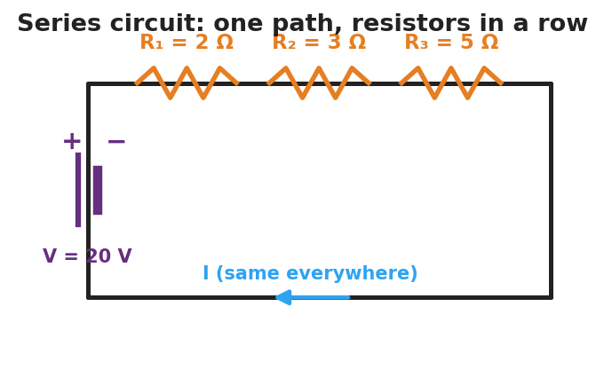
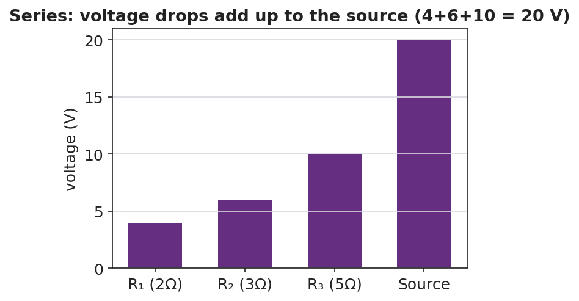

Unit: Current Electricity — Lesson 03: Series Circuits
Phenomenon
An old string of holiday lights has fifty bulbs. You remove just one bulb — and the entire string goes dark. On a newer string, removing one bulb leaves the rest glowing.

Driving Question
Why can a single missing bulb shut down an entire string of lights?
Notice & Wonder
Watch one bulb come out of the old string and the whole string go dark. List two things you notice and two things you wonder.
Initial Model
Sketch three bulbs wired in a single loop with a battery. Draw one arrow for the current. Predict: is the current the same at every bulb, or does it shrink as it passes each one?
Investigate
This is a single-loop series circuit driven by a 20 V battery. Set the three resistor values. The current is the same everywhere (I = V ÷ R_total), and each resistor's voltage drop (V = I·R) is shown — watch the three drops add up to the source.
R_total = R₁ + R₂ + R₃ = 10 Ω · current everywhere I = 2.0 A · drops add to 20.0 V

Make It Make Sense
- Three resistors (1 Ω, 2 Ω, 3 Ω) are in series with a 12 V battery. Find the equivalent resistance and the current.
- In a series circuit the current is 2 A everywhere. The resistors are 3 Ω and 5 Ω. Find the voltage drop across each.
- You add a fourth resistor in series. Does the current go up or down? Why?
Stuck? Sentence frame
"In a series circuit the current is ___ everywhere because ___, so adding a resistor makes the current ___."
Key Vocabulary (max 3)
- series circuit — a circuit with a single path for charge, so the current is the same at every point
- equivalent resistance — the single resistance that could replace a group of resistors; in series, R_total = R₁ + R₂ + …
- current — the rate of flow of charge (amperes); in a series circuit it is identical everywhere in the loop
Revise Your Model
Return to your Initial Model. Was the current actually the same at every bulb? Rewrite your explanation for why one missing bulb kills the whole old string, using series and path.
Return to the Phenomenon
Explain, in one sentence using series and path, why one missing bulb kills the whole old light string: the bulbs are in series — one path — so a missing bulb breaks the only path and stops the current everywhere.
Exit Ticket + Closing Reflection
- A 24 V battery is connected in series to a 4 Ω and an 8 Ω resistor.
(a) Find the equivalent (total) resistance. (b) Find the current in the circuit. (c) Find the voltage drop across the 8 Ω resistor and check that the two drops add to 24 V. - Reflection: What's one prediction you made today that the measurements proved wrong — and what changed your mind?